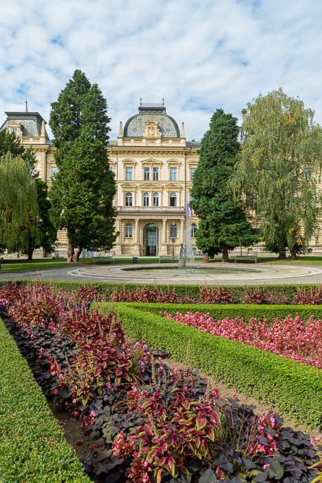
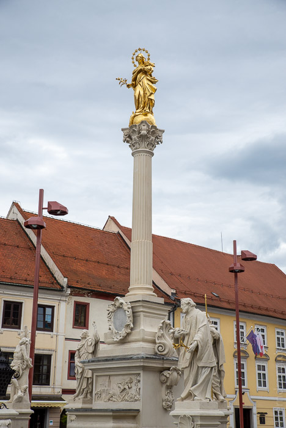
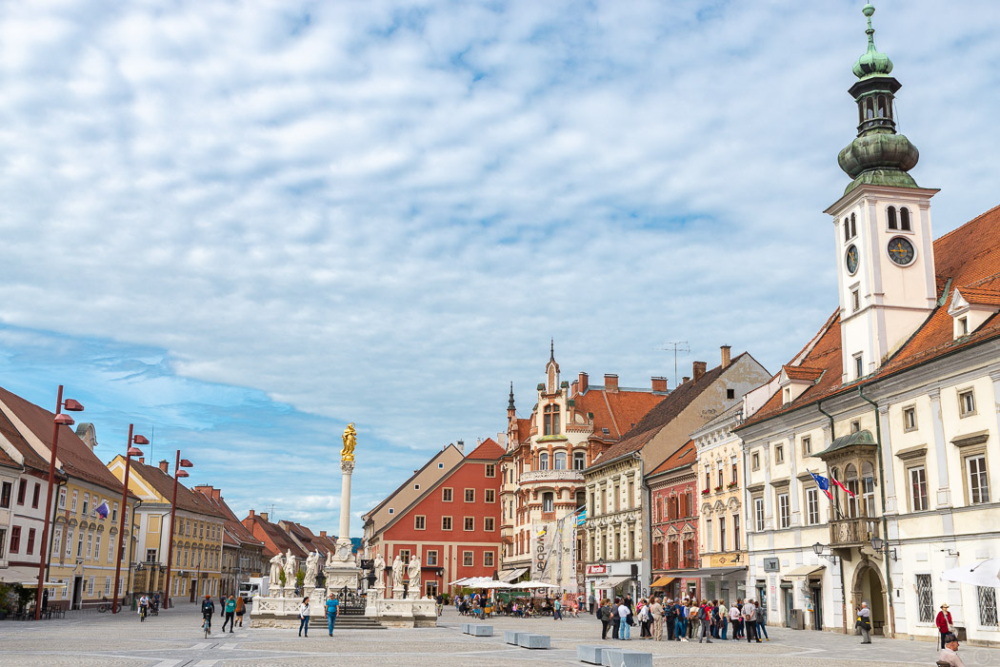
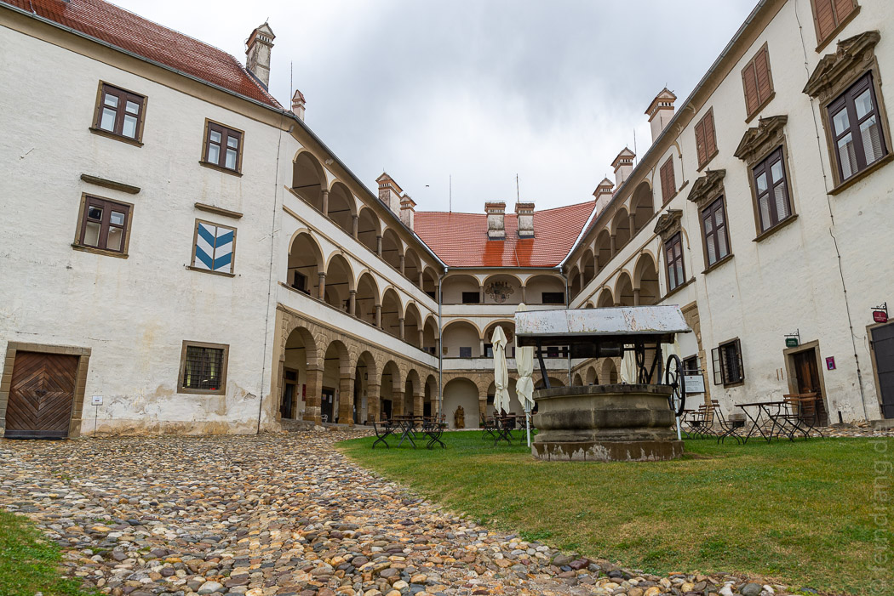
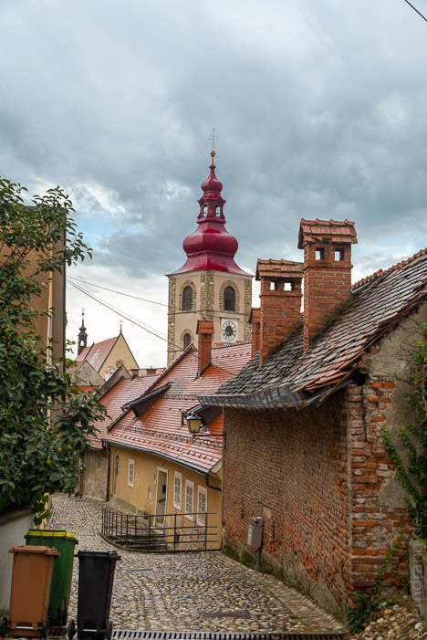

Das schlechte Wetter hatte uns ostwärts aus dem schönen Logar-Tal getrieben. Die zweitgrößte Stadt des Landes, Maribor, war laut Wetterbericht der place-to-be für den Donnerstag. Der Weg führte uns aus den Bergen heraus durch immer flachere und langweiligere Gegenden.
Maribor selbst hat eine kleine Altstadt, durch die man ganz nett spazieren kann. Überall gibt es Cafés mit Cremeschnitten und viele Geschäfte. Insgesamt wirkte es aber recht ausgestorben. An den berühmtesten Sehenswürdigkeiten wie einer 400-jährigen Weinrebe oder einem mittelalterlichen Turm würde man ohne Reiseführer unbemerkt vorbeigehen. Vielleicht liegt es daran, dass die Burg nicht auf einem Hügel liegt. So kann das ja nichts werden. Der große Stadtpark ist aber sehr schön angelegt und hilft dabei einen sonnigen Nachmittag vergehen zu lassen.   
Etwas südlich von Maribor ist der kleine Ort Ptuj. Dort liegt die Burg auf einem Hügel. Das kleine Städtchen darunter hat sich augenscheinlich in den letzten hundert Jahren wenig verändert. Leider hat uns dort dann auch der unausweichliche Regen wieder eingeholt. Wir haben schon so langsam Kaffee getrunken, dass darüber fast der Winter eingebrochen wäre, mussten aber trotzdem noch durch den Regen zurück.
 